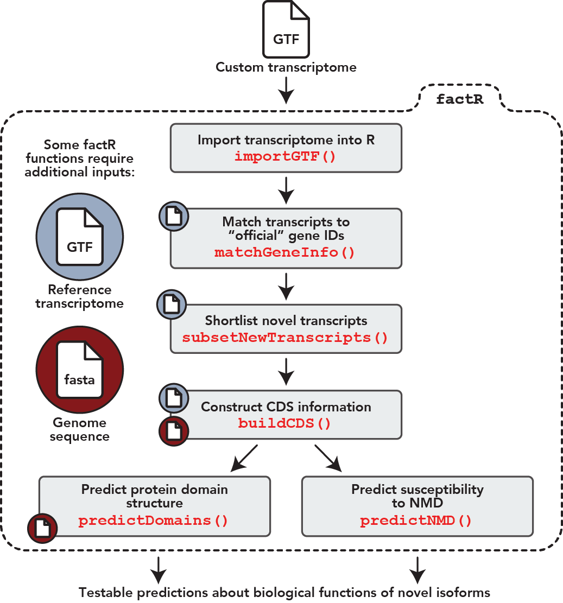

General workflow

factR is a robust and easy-to-use R package with tools to process custom-assembled transcriptomes (GTF). Below are factR’s key functions:
- Core features
- Construct transcript coding (CDS) information using a reference-guided process
- Predict protein domains on coding transcripts
- Predict sensitivity of coding transcripts to Nonsense-mediated decay
- Supporting features
- Match chromosome levels of query GTF/object to reference annotation
- Match gene_id and gene_names of query GTF to reference annotation
- Plot transcripts from GTF GRanges object using wiggleplotr
- Select new transcripts from custom transcriptome
What you need
- Custom-assembled transcriptome (GTF)
- Reference annotation as GenomicRanges object. Obtained from:
- Resource database including AnnotationHub
- Import of reference annotation assembly (GTF/GFF3)
- Genomic sequence. Obtained from:
- Resource database including BSGenome, AnnotationHub
- Import of genomic fasta file
Getting started
See our vignette for full instructions on how to get started
Acknowledgements
We thank Kaur Alasoo for sharing code resources for wiggleplotr and for valuable discussions on the design of the package.